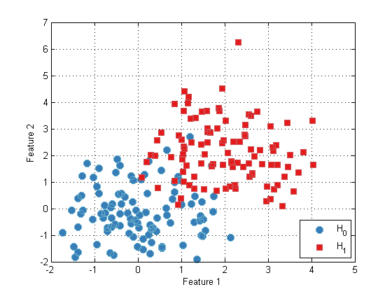
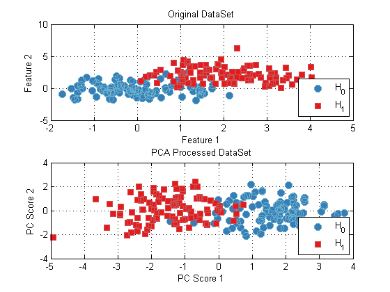
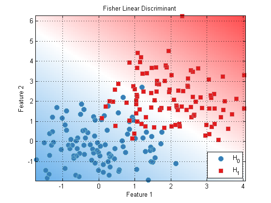
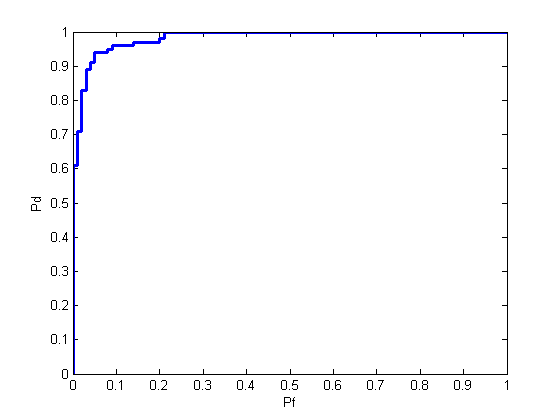
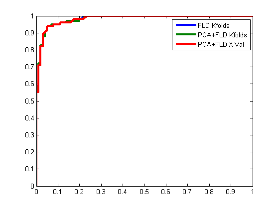

Quick Start
This document will quickly introduce you to a few basics of the PRT: data sets, classifiers, and algorithms. For a more detailed outline of these topics, please see our documentation
Contents
Formatting Your Data (Making x and y)
To use the PRT, data should be stored in prtDataSet objects. The most important prtDataSet object is the basic classification data set - prtDataSetClass.
The simplest classification data sets assume that the data you are using is stored in a double matrix, and each row corresponds to an observation (or object), and each column corresponds to a feature (or variable). Furthermore, for a labeled data set, each observation should be drawn from one of N discrete classes, stored in a nObservations x 1 vector.
As convention, the data matrix is often referred to as "x", and the label vector is referred to as "y". For example, the following code makes x and y matrices for 2 classes, with 100 samples per class.
nSamplesPerClass = 100; nFeatures = 2; mean_0 = 0; % The mean of class 0 mean_1 = 2; % The mean of class 1 % x_0 will be a 2 dimensional Guassian distrbuted variable with mean [0 0] x_0 = randn(nSamplesPerClass,nFeatures) + mean_0; % y_0 correspond to the labels of x_0, in this case, class 0 y_0 = zeros(nSamplesPerClass,1); % x_1 will be a 2 dimensional Guassian distrbuted variable with mean [2 2] x_1 = randn(nSamplesPerClass,nFeatures) + mean_1; % y_1 correspond to the labels of x_1, in this case, class 1 y_1 = ones(nSamplesPerClass,1); % Concatenate both, now we have a vector of observations x, and a vector of % corresponding class labels, y. x = [x_0;x_1]; y = [y_0;y_1];
Creating and Plotting Data Sets (Using x and y)
Given data like x and y from above, it's easy to make a prtDataSetClass from data and class labels, if your data is in a matrix x of size nObservations x nFeatures, and the labels are in a vector y of size nObservations x 1 (with y == 1 indicating class 1, and y == 0 indicating class 0, for example), just call:
dataSet = prtDataSetClass(x,y);
% The plot function is overloaded for prtDataSet objects:
plot(dataSet);
 Actions
prtActions represent the different types of operations you can apply to your data.
Almost everything you can do in the PRT is implemented as a prtAction, and all prtActions can be trained and run. Training is the activity of inferring parameters from a set of data (for example, training a PCA object consists of inferring the principal component loadings). Running an action results in applying the trained object to a set of data (for example, running a classifier object assigns confidences to each observation).
The input to a TRAIN method should be the data set to be used for training, and the output of training any action is an object of the same type as the original action, but with additional fields set based on the training data.
For a concrete example, consider the PRT implementation of principle component analysis, the prtPreProcPca object. prtPreProcPca is a prtAction, so it has a train and a run method, and we can do the following:
pca = prtPreProcPca; % Create a prtPreProcPca object pca.nComponents = 2; % nComponents is a field of prtPreProcPca objects pca = pca.train(dataSet); % Outputs a pca object with pcaVectors set
The RUN method can only be used on a prtAction object which has already been trained. The RUN method takes in a new data set (the test data set), and outputs the results of processing the data set with the trained object. For pre-processing objects, this results in a data set with observations that have been processed (e.g., by mapping to PCA scores).
For example:
dataSetPca = pca.run(dataSet); % Run the trained object on the dataSet subplot(2,1,1); plot(dataSet); title('Original DataSet'); subplot(2,1,2); plot(dataSetPca); title('PCA Processed DataSet');
Classifiers
Since classifiers are also implemented as prtActions, the exact same approach as above applies. For example, say we want to train and evaluate a Fisher's linear discriminant classifier on our data. We could do the following
subplot(1,1,1); %clear the previous two plots fld = prtClassFld; % Create a Fisher linear discriminant classifier fld = fld.train(dataSet); % Train it using the data set yOut = fld.run(dataSet); % Apply it to the data set % We can plot the Receiver Operating Curve of the classifier, to give an % indication of how well it is performing: prtScoreRoc(yOut);

Where we have made use of the prtScoreRoc method which evaluates the ROC curve for a binary data set. Classifier objects also define a PLOT method, which can be used to visualize decision contours for trained classifiers (as long as the number of features in the data set is <= 3)
fld.plot; %equivalently, plot(fld)
 Combining Actions
Many different types of actions can be combined into more complicated actions. This is easily accomplished using the + operator. For example, to perform PCA, followed by FLD classification, use the + operator to concatenate a PCA and FLD object:
pcaFldAlgorithm = prtPreProcPca('nComponents',2) + prtClassFld; % Train and run as before pcaFldAlgorithm = pcaFldAlgorithm.train(dataSet); yOut = pcaFldAlgorithm.run(dataSet); prtScoreRoc(yOut);
Cross-Validation
In the examples above, we have performed training and testing on the exact same data set; this can often result in overly optimistic estimates of algorithm or classifier performance. To remedy that, we might split our data into training and testing data, then use the training portion in calls to TRAIN, and the testing portion in the call to RUN. However, this is somewhat wasteful of data, if we switched the data partition, we get a different, but equally valid measure of performance.
Cross-validation is a procedure for iteratively splitting the available data into different training/testing sets (referred to as "folds") such that all data is used for training and all data is used for testing in different iterations. Cross-validation enables more accurate estimates of algorithm performance than the simpler approaches described above.
Most prtActions can be cross-validated using one of two methods - KFOLDS or CROSSVALIDATE.
The KFOLDS method provides a simple utility to randomly split the available data into K folds, and aggregate results across all combinations of training on K-1 folds and testing on the remaining fold.
The inputs to the K-folds method are the data set to be used in cross-validation and the number of folds to use. The output of the KFOLDS method is a data set containing the results of testing on each element in the input data set.
fld = prtClassFld; % Create the data classifier yOut = fld.kfolds(dataSet,3); % Call KFOLDS with 3 folds % Instead of plotting right away, we'll retain the data so we can overlay % several ROC plots momentarily [pfFldKfolds,pdFldKfolds] = prtScoreRoc(yOut);
Note that since algorithms are also prtAction objects, KFOLDS works in the same manner:
% Create an algorithm pcaFldAlgorithm = prtPreProcPca('nComponents',2) + prtClassFld; % Run KFOLDS with 10 folds yOut = pcaFldAlgorithm.kfolds(dataSet,10); % Evaluate the receiver operating curve [pfAlgoKfolds,pdAlgoKfolds] = prtScoreRoc(yOut);
Although K-folds is easy to use, sometimes we might want to exercise more control over what data is used in which training or evaluation fold. For example, we might want to ensure that neighboring observations are not used in the same folds. The CROSSVALIDATE method enables the use to specify integer valued fold indices to define which data will be kept together in different folds.
% For example, make a repeating vector [0;1;2;0;1;2;...], so that every third % observation is used in the same fold: foldLabels = mod(1:dataSet.nObservations,3)'; % Call CROSSVALIDATE with the fold lables yOut = pcaFldAlgorithm.crossValidate(dataSet,foldLabels); % Evaluate the receiver operating curve [pfAlgoXval,pdAlgoXval] = prtScoreRoc(yOut); % Compare the three different techniques h = plot(pfFldKfolds,pdFldKfolds,pfAlgoKfolds,pdAlgoKfolds,pfAlgoXval,pdAlgoXval); set(h,'linewidth',3); legend(h,{'FLD Kfolds','PCA+FLD Kfolds','PCA+FLD X-Val'});
More Information
This is just a brief overview to help you get started with the PRT; additional information about all the objects described here can be found in Some examples of using the PRT